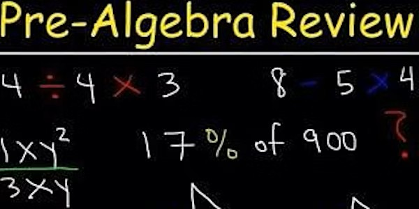

Introducción a la clase
Pre-álgebra es un curso fundamental de matemáticas que prepara a los estudiantes para el álgebra, centrado en aritmética básica, sistemas numéricos y conceptos algebraicos como expresiones, ecuaciones y desigualdades.

Plan de clase
- Números racionales
- Exponentes
- Variables
- Desigualdades
- Números primos y compuestos